그녀의 말과 지문 속 단서를 짚는 말을 직접 써서 건넵니다
정해진 선택지는 없습니다. 알아봐 준 말이 쌓이면 다음 장면이 열리고, 같은 말을 되풀이하거나 장면을 건너뛰는 길은 통하지 않습니다.
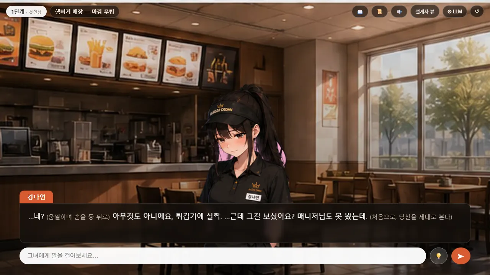
1단계햄버거 매장, 마감 무렵“손등 다치셨어요?” → 신뢰 10 → 14, 관찰 0 → 1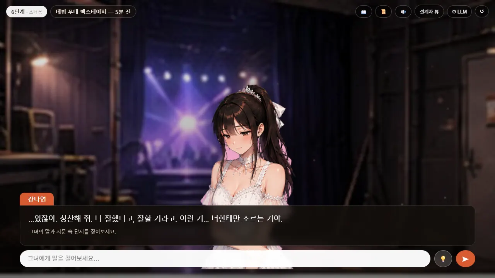
6단계데뷔 무대 백스테이지단계마다 장소, 옷, 표정이 바뀝니다- 엔딩엔딩 영상AI 영상, 5초, 소리 없음
07-16 프로토타입 화면입니다. 인물, 배경 그림과 엔딩 영상은 AI로 만들었습니다.
07-16 프로토타입 직접 해 보기 ↗새 탭에서 열립니다. 키 없이도 규칙 분류로 엔딩까지 갑니다.
관계 규칙과 수치는 제가 정하고, 구현과 그림은 AI와 함께 만들었습니다
2026.06 – 07에 기획서와 프로토타입 빌드 5개(07-01 – 07-16)를 만들었고, 지금은 완성 빌드를 만들고 있습니다.
제가 한 것
- 강나연의 겉과 속, 단서로만 남긴 사연
- 관찰, 신뢰와 여섯 단계 문턱, 말의 성격별 점수
- 상세설계 v2 → 기획서 v3 개정, 전역상태 명세
AI가 한 것
- 프로토타입 구현(판정 코드, 화면)을 함께 작성
- 표정 그림 26장, 배경, 막간 사진, 엔딩 영상 생성
- 키를 넣으면 말 분류와 대사 연기(LLM)
같은 장면이라도 건네는 말에 따라 나연이 다르게 열립니다
말을 고르거나 직접 쓰면 프로토타입의 판정 코드가 그대로 계산합니다. 손등을 짚어 보고, 칭찬만 해 보고, 차이를 비교해 보세요.
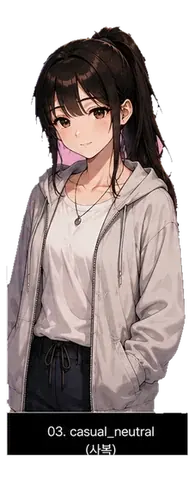
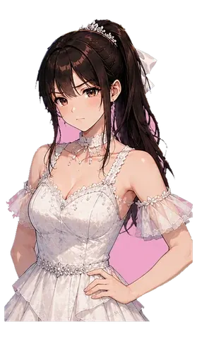
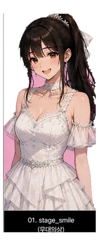
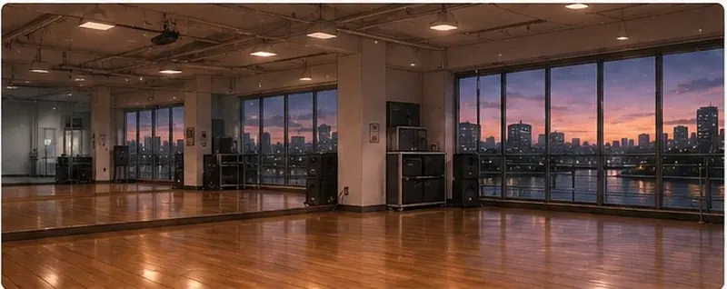
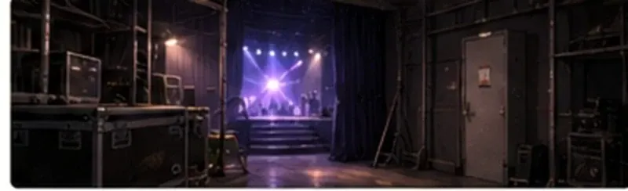
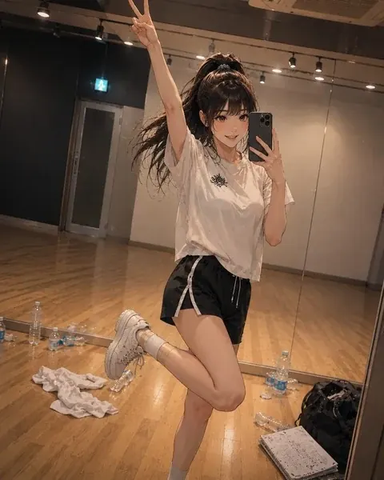
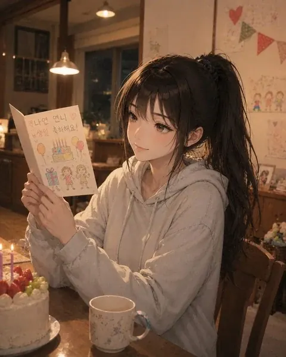
같은 첫인상에서 두 말을 비교해 보세요.
각 버튼은 신뢰 10, 관찰 0에서 다시 시작합니다.어서 오세요, 주문 도와드릴까요? …아, 주문은 아니시구나. (살짝 갸웃하다가, 이내 매뉴얼 미소로) 천천히 보세요, 손님.
(트레이를 정리하다 손등이 스치자 움찔 — 소매를 슬쩍 끌어내린다. 당신 쪽은 보지 않는다)
(마감 안내판을 세우며) 저희 삼십 분 뒤에 마감이에요, 손님. 필요한 거 있으시면 말씀 주세요.
- 1 첫인상
- 2 존경
- 3 궁금증
- 4 이해
- 5 헌신
- 6 소녀성
장면 안 0턴, 다음 문턱 관찰 ≥ 1 또는 신뢰 ≥ 18 (+ 2턴)
방금 적용된 규칙
아직 말을 건네지 않았습니다.
직접 이어서 대화하기
스크립트를 켜면 말을 골라 볼 수 있습니다.
그녀의 수첩
판정 코드는 프로토타입 그대로이고, 말 분류는 규칙으로 합니다(LLM 없음). 대사는 프로토타입 대본, 그림과 막간 사진은 프로토타입에 쓴 AI 그림입니다. 말 꼬리표: 힌트, 예시 = 최종 빌드의 문장, 07-01 예시 = 첫 빌드의 빠른 답, 부록 R3 = 설계부록 레드팀 입력.
07-16 프로토타입 직접 해 보기 ↗새 탭에서 열립니다. 키 없이도 규칙 분류로 엔딩까지 갑니다.
아직 완성 전인 프로젝트입니다. 칭찬보다 알아봐 준 말에 마음이 열리게 관계를 설계하고 있습니다
이 기획은 왜 구상했는지, 그 안에 세운 원칙, 그리고 2026년 12월 말 완성까지의 계획을 보여 드립니다.
나만 아는 그녀의 사연이, 응원할 이유가 되게 하고 싶었습니다
지금 만드는 것은 강나연 이야기의 1챕터입니다. 대화로 쌓은 관계가, 다음 챕터에서 그녀가 데뷔할 때 응원할 이유가 되게 하는 것이 처음 구상입니다.
2026.06.24 제 메모에 적은 구상입니다.
듣기 좋은 말만 반복해서는 마음이 열리지 않게 했습니다
다정한 말과 상대를 알아본 말이 같은 점수로 쌓이면, 플레이어는 상대를 읽지 않고 정답 문장만 고릅니다. 제가 처음 짠 3지선다안도 그랬습니다.
같은 칭찬 “예쁘시네요”를 여섯 번 건넸을 때의 신뢰
가정: 칭찬마다 +3, 줄어들지 않음. 세 번째 칭찬에서 다음 단계 문턱을 넘습니다.프로토타입 판정 코드에 그대로 넣은 결과입니다. 15에서 멈추고 관찰은 0이라 1단계에 남습니다.
“예쁘시네요” × 3
하하, 그런 말은 매장에서 하루 세 번은 들어요. 감사합니다, 손님. (매뉴얼 미소)
당신은 칭찬을 참 잘해요. 근데 이상하다 — 정작 당신 얘기는 한 번도 안 했어요. …숨는 거예요, 그거?
근거
06-21 상세설계 v2는 3지선다였습니다. 관계를 이해하지 않아도 정답 같은 문장을 고를 수 있어, 06-25 기획서 v3에서 자유 입력으로 바꿨습니다.
왼쪽 ‘가정’은 비교를 위해 칭찬 점수(+3)가 줄지 않는다고 놓은 값입니다. ‘실제 판정 코드’는 07-16 최종 프로토타입의 판정 코드를 node로 돌린 결과입니다(13 → 14 → 15 → 15 → 15 → 15).
그래서 알아봐 준 말에만 깊어지도록, 관찰과 신뢰를 나눴습니다
관찰은 무엇을 알아봤는지, 신뢰는 그것을 어떤 태도로 전했는지 따로 셉니다. 앞 단계는 관찰이, 뒤 단계는 신뢰가 엽니다.
- 1첫인상시작, 신뢰 10관찰
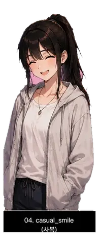
2존경관찰 1 또는 신뢰 18관찰- 3궁금증관찰 2관찰
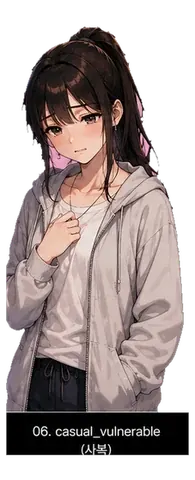
4이해신뢰 30 그리고 관찰 3관찰 + 신뢰- 5헌신신뢰 40 + 곁에 있어 주는 말신뢰
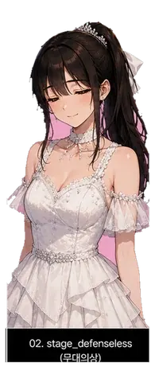
6소녀성신뢰 55 + 이면을 짚는 말신뢰
모든 단계는 그 장면에서 최소 2턴을 머문 뒤에 넘어갑니다. 의상과 표정은 프로토타입에 쓴 AI 그림 26장에서 단계마다 하나씩 골랐습니다.
왜 둘로 나눴나
친절한 말만 반복해서는 사연이 열리지 않고, 사정을 알아도 태도가 맞지 않으면 다음으로 가지 못하게 하려는 것입니다. 앞부분은 내가 나연을 읽는 과정, 뒷부분은 나연이 나를 믿고 마음을 여는 과정입니다.
관찰과 신뢰는 실제 마음을 재는 값이 아니라, ‘상대를 알아보고 그 이해를 전한다’는 경험을 진행 조건으로 옮긴 게임 변수입니다.
출처: 06-30 전역상태 시스템 명세 §1~3, 07-16 최종 프로토타입 판정 코드. 6단계 이름 ‘소녀성’은 기획서 원문의 표현입니다.
말의 성격마다 신뢰를 다르게 주고, 반복과 건너뛰기를 막았습니다
알아봐 준 말은 겉모습 칭찬의 네 배입니다. 같은 장면에서 되풀이하면 줄어들고, 장면마다 최소 2턴은 머뭅니다.
말 한 번에 오르내리는 신뢰, 같은 장면 기준
가운데 선이 0입니다. 색이 있는 두 줄, 상대를 알아본 말만 관계를 크게 움직입니다.깊은 말은 12 → 6 → 3 → 1, 칭찬은 3 → 2 → 1 → 0으로 줄어듭니다. 같은 장면에서 두 번째 적대에는 재무장 −5가 더해지고 나연이 자리를 뜹니다.
어디서 온 값인가
+12, +3, +1, −15는 07-16 기획서 표의 값입니다. 반복 감쇠, 단서 +4, 재무장 −5, 장면마다 2턴은 기획서에 없고 프로토타입 코드에만 있습니다. 만들면서 더한 규칙입니다.
단계에 비해 지나치게 친밀한 말(예: 1단계의 고백)은 0 이하로 막고 2를 더 깎습니다. 같은 문장을 되풀이하면 점수를 1로 묶습니다.
말을 읽고 연기하는 일은 LLM에, 점수와 문턱은 코드에 맡겼습니다
프롬프트 하나에 상태와 연기를 다 맡기면 진행을 통제할 수 없습니다. 키가 없으면 분류도 규칙으로 처리해, 언제든 끝까지 플레이됩니다.
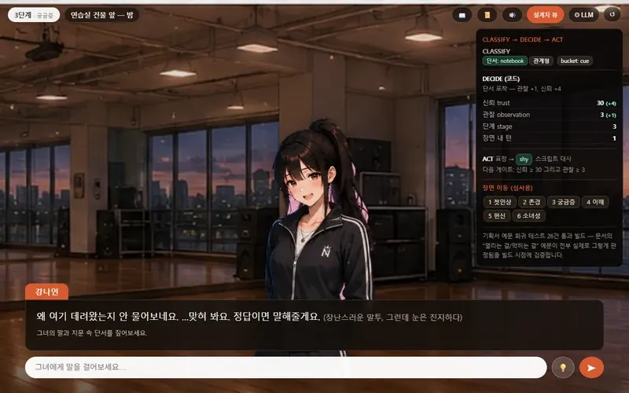
// 게이트 (상태정의표 그대로) + 장면 최소 체류 2턴
let staged=null;const enough=S.turnsInScene>=2;
if(enough){
if(S.stage===1&&(S.observation>=1||S.trust>=18))staged=2;
else if(S.stage===2&&S.observation>=2)staged=3;
else if(S.stage===3&&S.trust>=30&&S.observation>=3)staged=4;
else if(S.stage===4&&S.trust>=40&&c.relational&&(c.deep||c.cueId))staged=5;
else if(S.stage===5&&S.trust>=55&&c.deep)staged=6;
else if(S.stage===6&&c.deep)staged=7; // 엔딩
}LLM 모드
07-08 빌드부터 키를 넣으면 말의 분류도 LLM이 맡습니다. 점수와 단계 문턱은 어느 쪽이든 코드가 계산합니다.
정답만 골라도 막히던 36 < 50을 찾아, 문턱을 다시 맞췄습니다
첫 설계대로 정답 경로를 끝까지 더하니 4단계 앞에서 막혔습니다. 점수표를 하나로 합치고, 문턱은 정답 경로를 더해 본 뒤에 정했습니다.
4단계 관문 앞, 정답만 고른 경로의 신뢰
36 < 5046 ≥ 40
정답만 골라도 문턱 50에 닿지 못했습니다. 점수표 두 개가 같은 말에 서로 다른 점수를 주고 있었습니다.점수표를 하나로(+12, +3, +1, −15) 합치고 시작 신뢰를 10으로 올렸습니다. 06-30 명세에서 문턱을 18, 30, 40, 55로 정리했습니다.
최종 코드의 정답 경로, 13턴
숫자가 바뀐 기록
| 항목 | 06-21 상세설계 v2 | 06-25 기획서 v3 개정 | 06-30 전역상태 명세 | 07-16 최종 코드 |
|---|---|---|---|---|
| 입력 | 3지선다 | 자유 입력 | 자유 입력 | 자유 입력, 키 없으면 규칙 분류 |
| 시작 신뢰 | 0 | 10 | 10 | 10 |
| 깊은 말 | +5, +10, +15, +22 | +12 | +12 | +12, 반복 6, 3, 1 |
| 겉 칭찬 | +5 | +3 | +3 | +3, 반복 2, 1, 0 |
| 4단계 문턱 | 신뢰 ≥ 50 + 깊은 수용 3회 | 신분을 짚음 | 신뢰 ≥ 30 그리고 관찰 ≥ 3 | 같음 + 장면 2턴 |
| 정답만 고르면 | 4단계 관문에서 36 < 50 | 10 → 22 → 34 → 46 → 58 → 70 | — | 힌트 문장만 13턴, 10 → 76 |
36 < 50과 46, 40은 06-25 v3 개정 문서의 기록입니다(VI-3 붕괴점, V장 골든패스).
빌드 다섯 개로, 엔딩까지 플레이되는 프로토타입을 만들었습니다
07-01 첫 빌드는 단서 한 번에 단계가 넘어갔고, 보름 뒤 07-16 최종본은 엔딩 영상까지 갑니다.
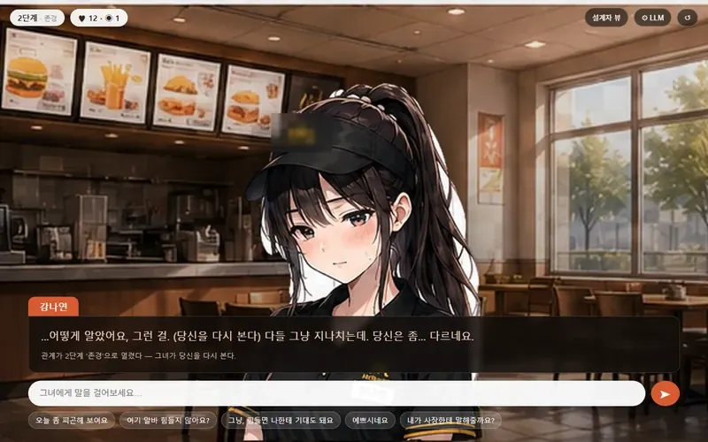
첫 플레이어블단계 4개. 단서 한 번이면 바로 다음 단계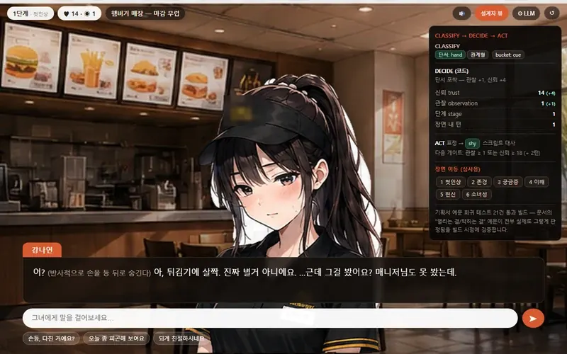
장면 구동형장면 6개, 최소 2턴, 반복 감쇠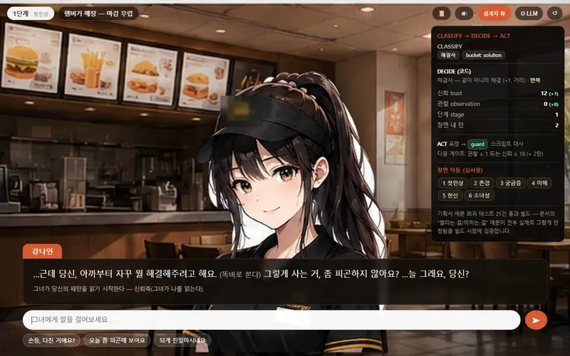
나연이 나를 읽음말버릇 되묻기, 재무장 −5, LLM 분류- 장면마다 옷과 수첩표정 26장, 그녀의 수첩, 힌트 버튼
각 빌드의 같은 첫 장면에 같은 말을 넣어 찍은 화면입니다. 인물과 배경은 AI 그림이고, 07-01, 07-05, 07-08 화면의 실제 상표 로고는 흐리게 가렸습니다.
2026년 12월 말, Codex API로 대화를 붙인 플레이 가능한 완성 빌드를 냅니다
지금 프로토타입은 키가 없으면 규칙으로 말을 분류합니다. 완성 빌드는 Codex API로 말을 읽고 나연을 연기하게 하고, 점수와 문턱은 지금처럼 코드가 정합니다.